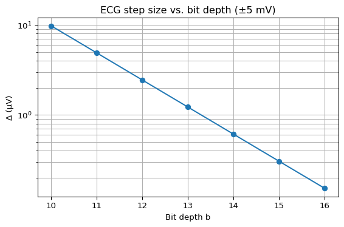

import numpy as np
import matplotlib.pyplot as plt
Vmin, Vmax = -5e-3, 5e-3
rng = Vmax - Vmin
bits = np.arange(10, 17)
Delta = rng / (2**bits)
snr_db = 6.02*bits + 1.76 # full-scale sine (Jayant & Noll)
print(f"12-bit Δ = {Delta[bits.tolist().index(12)]:.3e} V ≈ {Delta[bits.tolist().index(12)]*1e6:.2f} μV")
print(f"Ideal 12-bit SNR ≈ {snr_db[bits.tolist().index(12)]:.1f} dB")
plt.figure(figsize=(6,4))
plt.semilogy(bits, Delta*1e6, marker='o')
plt.xlabel("Bit depth b")
plt.ylabel("Δ (μV)")
plt.title("ECG step size vs. bit depth (±5 mV)")
plt.grid(True, which="both")
plt.tight_layout()12-bit Δ = 2.441e-06 V ≈ 2.44 μV
Ideal 12-bit SNR ≈ 74.0 dB